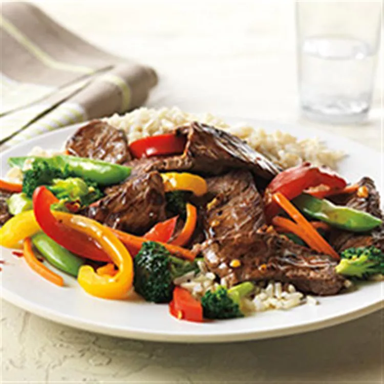

Asian Beef and Vegetable Stir-Fry
Return Home

Description
The Asian steak stir-fry is a delicious blend of savory flavors. Use lean beef to make this meal a quick and healthy option for any day of the week!
Ingredients
- 1 pound beef top sirloin steak boneless, cut 1 inch thick
- 4 cups assorted fresh vegetables, such as sugar snap peas, broccoli florets, bell pepper and carrot strips
- 1 clove garlic, minced
- 1/2 cup prepared stir-fry sauce
- 1/8 teaspoon crushed red pepper, or to taste
- 2 cups hot cooked rice
- 2 tablespoons unsalted dry-roasted peanuts (Optional)
Steps
- Cut beef steak lengthwise in half, then crosswise into 1/4-inch-thick strips.
- Combine vegetables and 3 tablespoons water in a large nonstick skillet. Cover and cook over medium-high heat until crisp-tender, about 4 minutes. Remove vegetables and drain.
- Heat same pan over medium-high heat until hot. Add 1/2 of the beef and 1/2 of the garlic; cook until the outside surface of beef is no longer pink, 1 to 2 minutes. Remove. Repeat with remaining beef and garlic.
- Return all beef and vegetables to the pan. Add stir-fry sauce and crushed red pepper; heat through. Serve over hot rice. Sprinkle with peanuts, if desired.
Return Home